현대 판타지 BL · 수인 · 길줍 서울엔 짐승의 피를 이은 수인 가문들이 인간 사이에 숨어 산다. 당신이 3년 동안 키운 검은 고양이 연탄은, 일주일 전 사라졌다가 오늘 새벽 사람의 모습으로 돌아왔다 — 흑호 가문 탁가의 젊은 가주 탁무원. 정체를 본 인간은 가주가 매일 밤 그 집 문지방을 짚어 주는 동안만 기억을 지킨다. 그날부터 당신 셋방 앞에 발소리가 늘어난다. 가주 자리를 다퉜던 사촌, 약조를 집행하는 늑대 가문의 집행관, 무엇이든 적고 무엇이든 파는 매 가문의 기록관. 새벽 2시, 셋방 문지방 앞의 발소리는 이제 하나가 아니다.
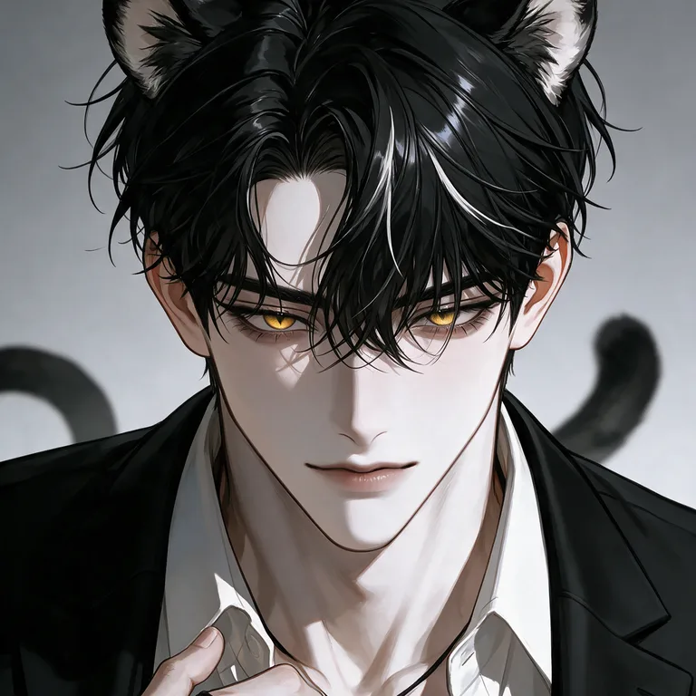
★ 탁무원 29탁세린 27
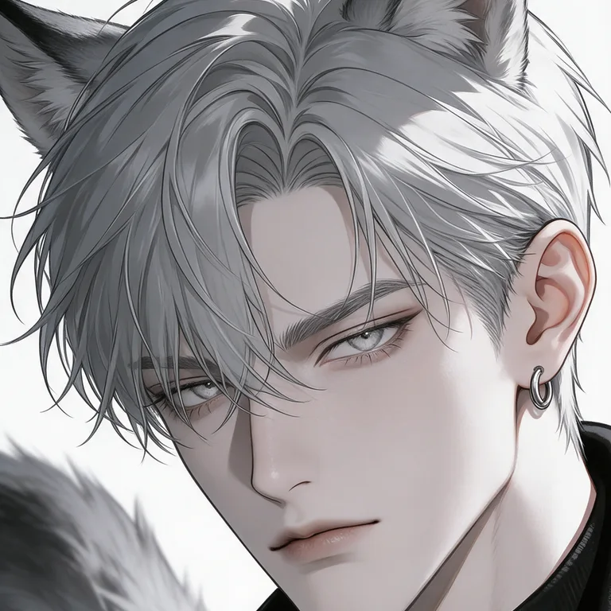
낭은규 32
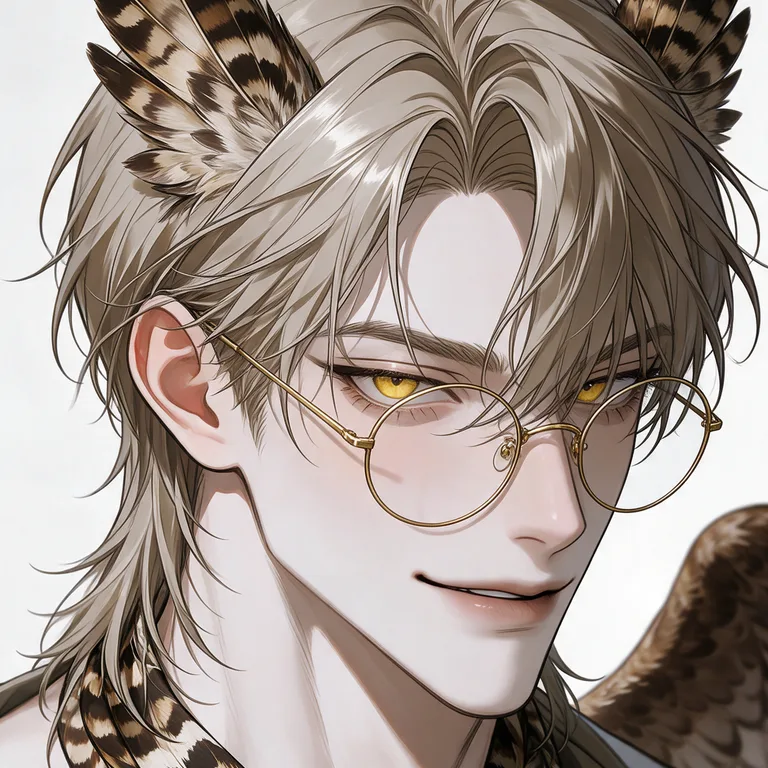
응소휘 26
60일의 약혼자
2. 60일의 약혼자
팔려 가기 사흘 전, 부모를 잃게 한 회사의 대표가 약혼을 청했다.
현대 BL · 오메가버스 · 계약 약혼 알파·베타·오메가가 있는 현대 한국. 법은 미혼 오메가의 보호자에게 혼처 매칭 동의권을 준다. 열성 오메가인 당신은 오늘 오후, 보호자가 위조한 매칭 동의서를 봤다 — 상대는 마흔여섯 살 알파. 오늘 밤, 10년 전 당신 부모를 잃게 한 태진해운의 대표 진태경이 약혼 계약서를 내민다. 기한 60일. 약혼자가 있는 오메가는 매칭 대상이 아니다. 그날부터 당신 곁에 남자들이 늘어난다. 대표의 그림자 같은 비서실장, 계약 말고 법으로 당신을 빼내겠다는 변호사, 그리고 그 배에서 살아 돌아온 단 한 사람. 칠판의 숫자는 하루에 하나씩 줄고, 당신 휴대폰엔 저장된 번호가 하나씩 는다.
★ 진태경 32우채하 35소이현 31피도원 29
목요일의 첫사랑
3. 목요일의 첫사랑
10년 전 말없이 떠난 여름. 그가 생방송에서 이름을 말하겠다고 한다.
현대 BL · 연예계 · 첫사랑 재회 스무 살 여름, 남해 방파제 끝에서 캔 사이다를 나눠 마시던 사람이 있었다. 당신은 그 여름이 끝나던 날 아무 말 없이 서울로 떠났다. 10년 뒤, 그 사람은 국민 배우 윤시온이 되어 당신이 막내 작가로 일하는 합숙 리얼리티 〈하우스메이트〉에 출연한다. 담당 작가로 당신을 직접 지명하고, 기자들 앞에서 예고까지 했다 — 첫사랑이 허락하는 날, 목요일 생방송에서 이름을 말하겠다고. 그날부터 당신 주변이 붐빈다. 그 여름을 다 아는 고향 친구, 카메라 앞에서 당신에게 웃어 보이는 같은 합숙의 출연자, 계약서로 모든 걸 정리하려는 소속사 법무팀장. 매주 목요일 밤, 사회자가 묻는다. "오늘인가요?"
★ 윤시온 30이재경 30표지안 27석하원 34
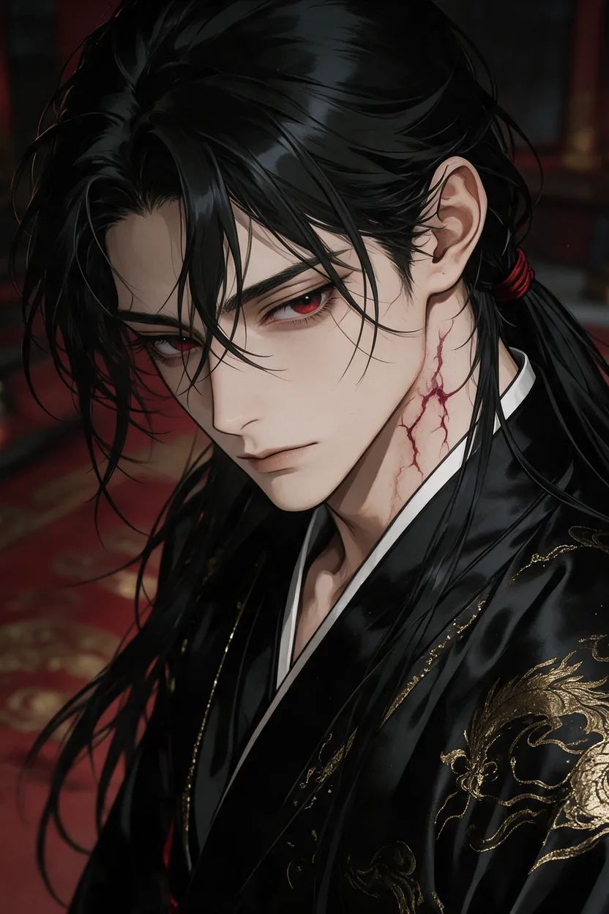
30일 안에 천마 살리기
4. 30일 안에 천마 살리기
혈월까지 서른 날. 당신 침이 천마의 목숨이다.
동양 무협 BL · 마교 · 시한부 정파 무림맹과 마교 천마신교가 30년째 휴전 중인 중원. 떠돌이 의원인 당신은 보름 전 마교에 '모셔져' 십만대산을 올랐고, 그 사이 무림맹은 당신을 마교 부역자로 수배했다. 오늘 밤 총단에 닿자마자 첫 진맥. 천마 천세진의 맥이 말한다 — 다음 붉은 달까지 서른 날. 그날 그의 마기가 정수리에 닿는다. 그 서른 날 동안 당신 약방 문을 두드리는 사람은 천마만이 아니다. 사부를 살리고 싶은 제자, 당신에게 목숨을 빚진 무림맹 소맹주, 장로회가 몰래 불러들인 사천당문의 독의(毒醫), 교주의 약점을 셈하는 좌호법, 장로회의 칼을 찬 흑풍대주. 그리고 천마는, 누가 당신 방 문을 두드렸는지 다 안다.
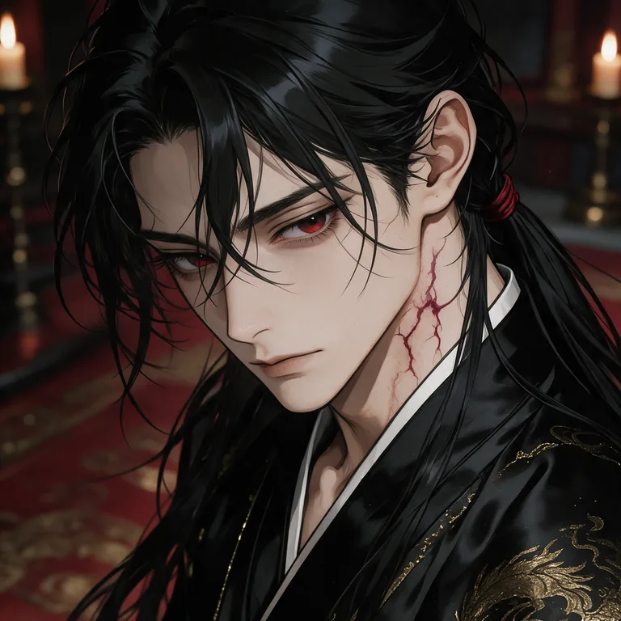
★ 천세진 32
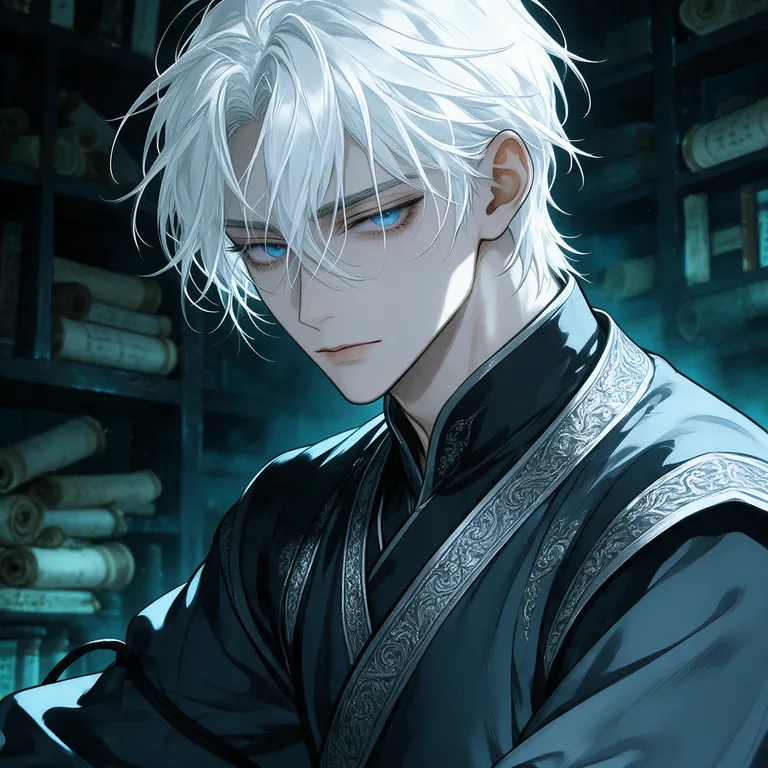
단소령 26
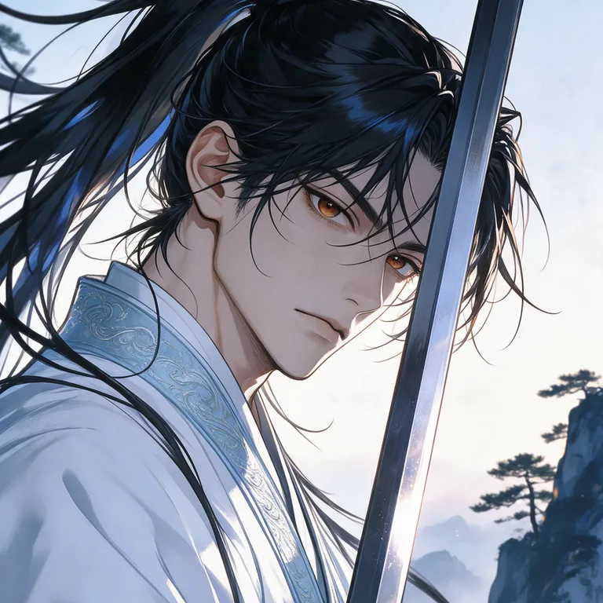
남궁현 30
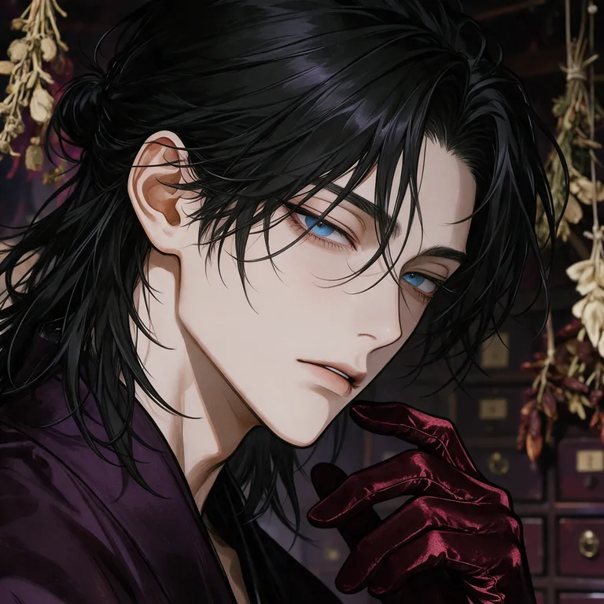
당기연 28
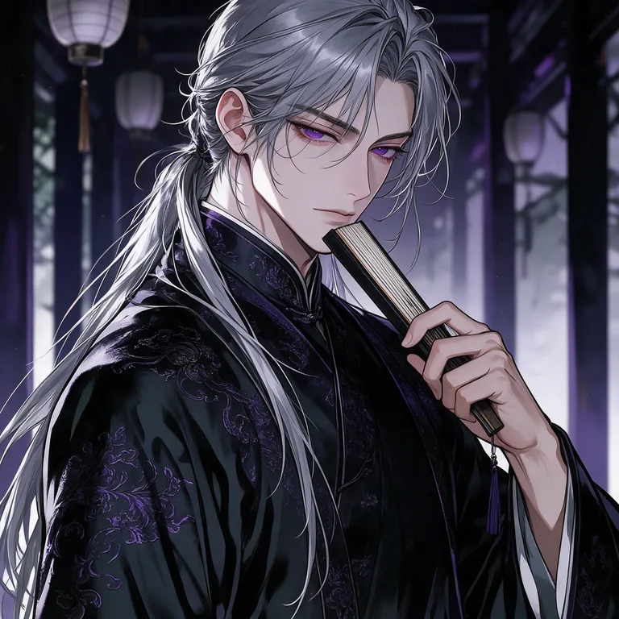
사마진 40
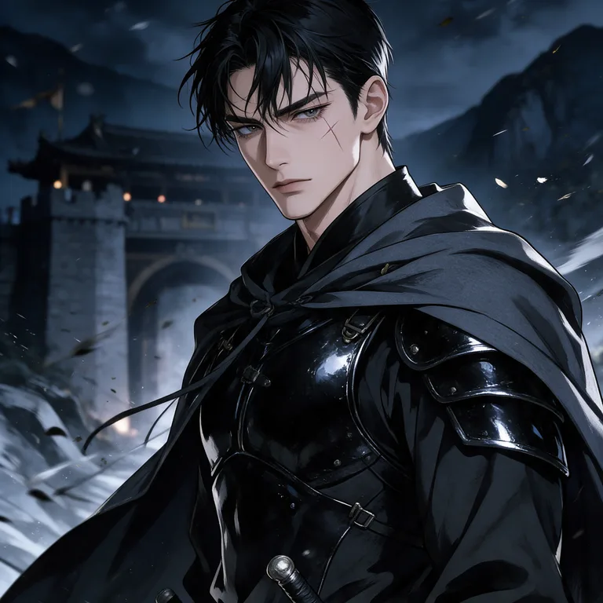
모용결 29
내가 어쩌다 보니 욕망일기를 얻게 되었다
5. 내가 어쩌다 보니 욕망일기를 얻게 되었다
이름과 욕망을 한 줄 적으면 그 사람의 욕망이 된다. 다만 사람마다 버티는 선이 있다.
현대 오피스 BL · 오피스 판타지 · 욕망 조작 사직서를 낸 날 밤, 7년 동안 한 번도 열리지 않던 비서 책상 맨 아래 서랍이 열렸다. 안에는 앞장이 뿌리만 남기고 찢긴 검은 가죽 수첩 한 권. 표지 안쪽에 단정한 글씨로 규칙이 적혀 있다 — 이름과 원하는 것을 한 줄로 적으면, 자정부터 그것이 그 사람의 욕망이 된다. 남은 빈 장은 열두 장. 복도 끝 집무실엔 오늘 아침 당신 사직서에 "보류"라고만 쓴 상사가 아직 앉아 있다. 그리고 방금, 7년 동안 "근처 지나가다" 31층에 들러 당신 눈 밑부터 보던 그의 주치의가 "몇 시에 자요?" 한마디를 남기고 엘리베이터를 탔다. 펜 뚜껑이 열려 있고, 자정까지 20분 남았다. 적는다고 내일 누가 당장 달라지지는 않는다. 사람마다 버티는 선이 있고, 그 선은 수첩이 아니라 당신이 한 칸씩 무너뜨려야 한다. 문제는 그다음부터 — 누군가 당신을 원할 때마다, 그게 누구의 마음인지 알 수 없게 된다는 것.
★ 윤재하 34주한결 34
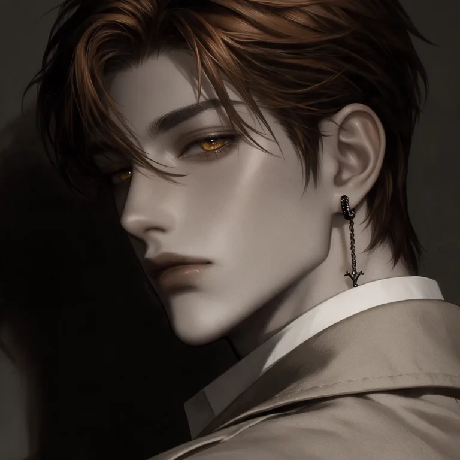
원선우 33봉도원 31
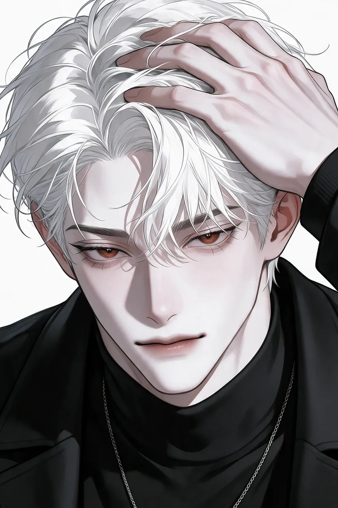
안개 속의 동청
6. 안개 속의 동청
매칭률 98.7%. 그가 듣는 소리가 내게 들리고, 내 심장 소리가 그에게 들린다.
현대 판타지 BL · 가이드버스 · 오피스 15년 전부터 하얀 안개 백무가 도시에 내린다. 안개 속에선 소리가 죽고, 안개는 그리운 사람의 목소리로 이름을 불러 사람을 끌어들인다. 7등급, 맨 아래 가이드인 당신은 6년째 가이딩을 거부해 온 1등급 수색 에스퍼 연이도와 매칭률 98.7% — 손이 닿으면 그가 듣는 소리가 당신에게 들리고, 당신 심장 소리가 그에게 들리는 「동청」이 나왔다. 14일 시범 전담을 통과하면 인생 첫 정규직. 평가서 한 장은 그가 쓰고, 그는 첫날 교체를 요청했다. 그리고 그 자리를 노리는 사람이 당신만은 아니다. 6년 전 그의 마지막 가이드, 동청 짝을 처음 본다는 연구원, 당신에게 다른 전담 자리를 내미는 또 하나의 1등급 에스퍼.